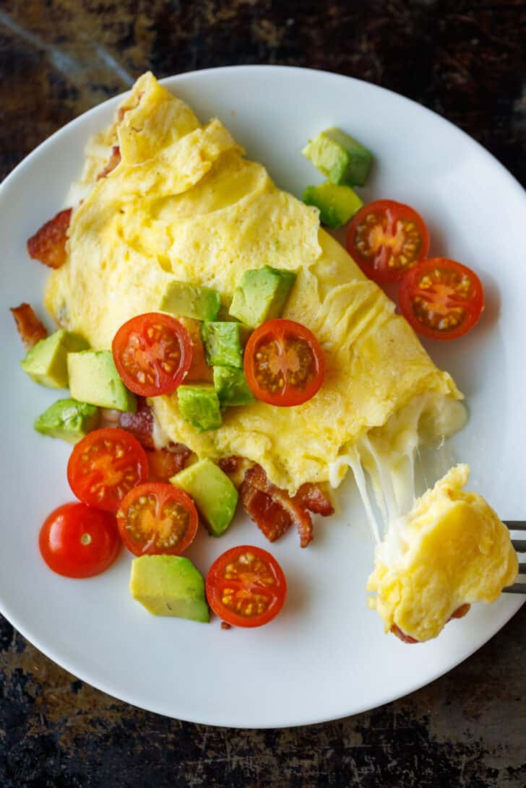

Omelette

Description
This perfect omelette recipe only uses four simlpe ingredients to create a tasty breakfast fit for anyone.
Ingredients
Steps
- In a small bowl, combine 2 eggs and a pinch of salt then beat with a fork until frothy.
- Place a small non-stick pan over medium heat and melt in 1/2 tablespoon of butter. Once butter is melted and bubbly, add beaten eggs and reduce heat to low.
- Pull cooked eggs with a spatula into the center, allowing the liquid eggs to fill the space.
- Once eggs are nearly set, the omelette slides easily on the skillet and you can get a spatula underneath, flip it over. Turn off the heat.
- Add cheese and your favorite toppings, fold the omelette and slide it onto a plate to serve.